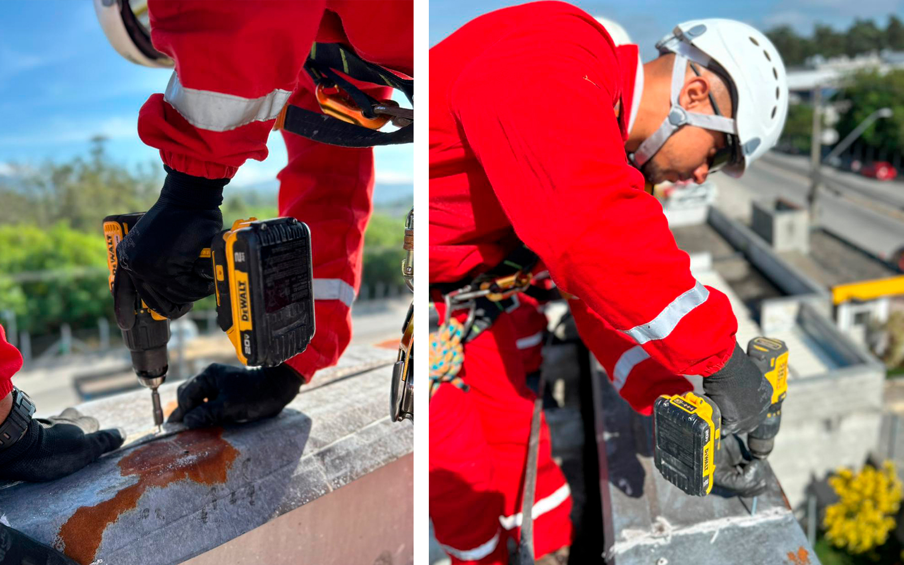
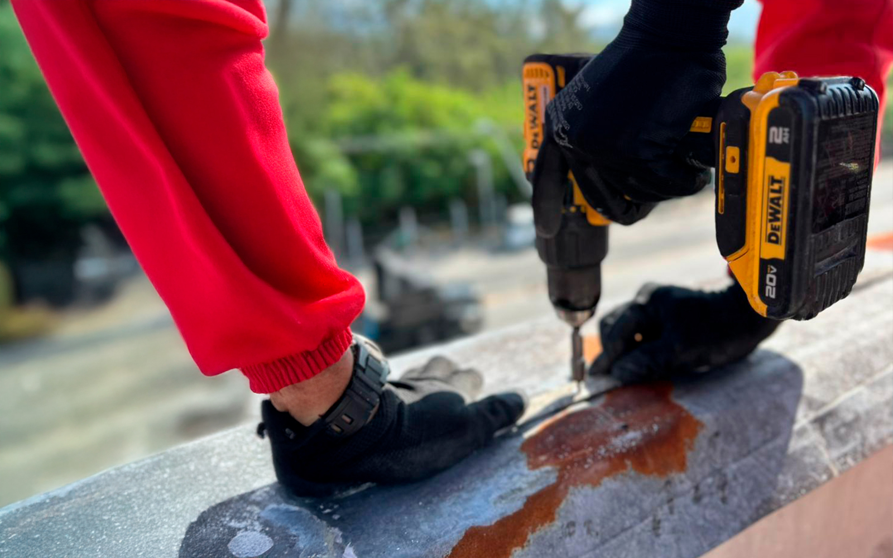

A Evolution Alpinismo Industrial oferece serviços especializados em reparos estruturais, garantindo a integridade e a segurança das edificações em altura.
Soluções precisas para reparos em estruturas de difícil acesso.

Na Evolution Alpinismo Industrial, entendemos a importância de manter a integridade estrutural e a segurança das edificações em São Paulo. Nossos serviços de reparos estruturais são realizados com técnicas avançadas de acesso por corda, permitindo intervenções precisas em áreas de difícil acesso sem comprometer a segurança ou a rotina do local.
Realizamos uma avaliação detalhada da estrutura, identificando pontos críticos, patologias e aplicando soluções personalizadas que garantam a durabilidade e a estabilidade do imóvel. Com equipamentos modernos e uma equipe especializada e certificada, asseguramos uma execução rápida, eficiente e em total conformidade com as normas técnicas.
Análise detalhada para identificar falhas, fissuras, trincas, corrosão e outros pontos de desgaste que comprometem a estrutura, garantindo um plano de reparo eficaz.
Técnicas avançadas que asseguram a recuperação da integridade da estrutura, incluindo reforço de elementos, tratamento de corrosão e aplicação de materiais de alta performance.
Intervenções preventivas em estruturas em São Paulo que previnem deteriorações futuras, aumentam a vida útil do imóvel e garantem a segurança contínua, com monitoramento constante da saúde estrutural.

Utilizando o alpinismo industrial, garantimos a execução dos reparos estruturais em São Paulo sem a necessidade de andaimes, o que reduz riscos, otimiza o tempo de intervenção e proporciona soluções seguras e eficazes para a recuperação e reforço de estruturas. Conte com a Evolution para a segurança e longevidade do seu patrimônio.
Soluções seguras e inovadoras para serviços em altura.
Entre em ContatoEncontre respostas para as perguntas mais frequentes sobre nossos serviços de reparos estruturais com alpinismo industrial.